Top 50 ggplot2 Visualizations - The Master List (With Full R Code)
What type of visualization to use for what sort of problem? This tutorial helps you choose the right type of chart for your specific objectives and how to implement it in R using ggplot2.
This is part 3 of a three part tutorial on ggplot2, an aesthetically pleasing (and very popular) graphics framework in R. This tutorial is primarily geared towards those having some basic knowledge of the R programming language and want to make complex and nice looking charts with R ggplot2.
Part 1: Introduction to ggplot2, covers the basic knowledge about constructing simple ggplots and modifying the components and aesthetics.
Part 2: Customizing the Look and Feel, is about more advanced customization like manipulating legend, annotations, multiplots with faceting and custom layouts
Part 3: Top 50 ggplot2 Visualizations - The Master List, applies what was learnt in part 1 and 2 to construct other types of ggplots such as bar charts, boxplots etc.
Top 50 ggplot2 Visualizations - The Master List
An effective chart is one that:
- Conveys the right information without distorting facts.
- Is simple but elegant. It should not force you to think much in order to get it.
- Aesthetics supports information rather that overshadow it.
- Is not overloaded with information.
The list below sorts the visualizations based on its primary purpose. Primarily, there are 8 types of objectives you may construct plots. So, before you actually make the plot, try and figure what findings and relationships you would like to convey or examine through the visualization. Chances are it will fall under one (or sometimes more) of these 8 categories.
1. Correlation
The following plots help to examine how well correlated two variables are.
Scatterplot
The most frequently used plot for data analysis is undoubtedly the scatterplot. Whenever you want to understand the nature of relationship between two variables, invariably the first choice is the scatterplot.
It can be drawn using geom_point(). Additionally, geom_smooth which draws a smoothing line (based on loess) by default, can be tweaked to draw the line of best fit by setting method='lm'.
# install.packages("ggplot2")
# load package and data
options(scipen=999) # turn-off scientific notation like 1e+48
library(ggplot2)
theme_set(theme_bw()) # pre-set the bw theme.
data("midwest", package = "ggplot2")
# midwest <- read.csv("http://goo.gl/G1K41K") # bkup data source
# Scatterplot
gg <- ggplot(midwest, aes(x=area, y=poptotal)) +
geom_point(aes(col=state, size=popdensity)) +
geom_smooth(method="loess", se=F) +
xlim(c(0, 0.1)) +
ylim(c(0, 500000)) +
labs(subtitle="Area Vs Population",
y="Population",
x="Area",
title="Scatterplot",
caption = "Source: midwest")
plot(gg)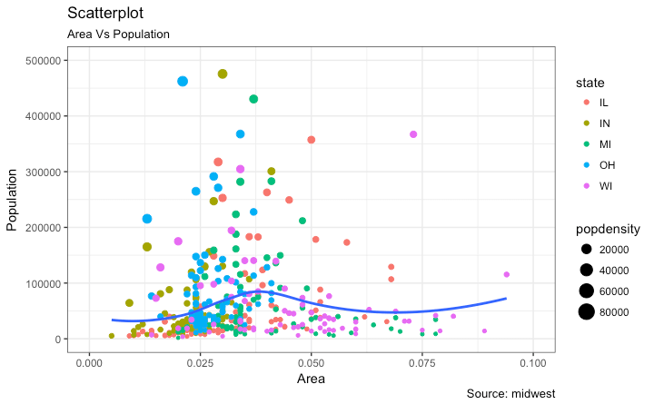
Scatterplot With Encircling
When presenting the results, sometimes I would encirlce certain special group of points or region in the chart so as to draw the attention to those peculiar cases. This can be conveniently done using the geom_encircle() in ggalt package.
Within geom_encircle(), set the data to a new dataframe that contains only the points (rows) or interest. Moreover, You can expand the curve so as to pass just outside the points. The color and size (thickness) of the curve can be modified as well. See below example.
# install 'ggalt' pkg
# devtools::install_github("hrbrmstr/ggalt")
options(scipen = 999)
library(ggplot2)
library(ggalt)
midwest_select <- midwest[midwest$poptotal > 350000 &
midwest$poptotal <= 500000 &
midwest$area > 0.01 &
midwest$area < 0.1, ]
# Plot
ggplot(midwest, aes(x=area, y=poptotal)) +
geom_point(aes(col=state, size=popdensity)) + # draw points
geom_smooth(method="loess", se=F) +
xlim(c(0, 0.1)) +
ylim(c(0, 500000)) + # draw smoothing line
geom_encircle(aes(x=area, y=poptotal),
data=midwest_select,
color="red",
size=2,
expand=0.08) + # encircle
labs(subtitle="Area Vs Population",
y="Population",
x="Area",
title="Scatterplot + Encircle",
caption="Source: midwest")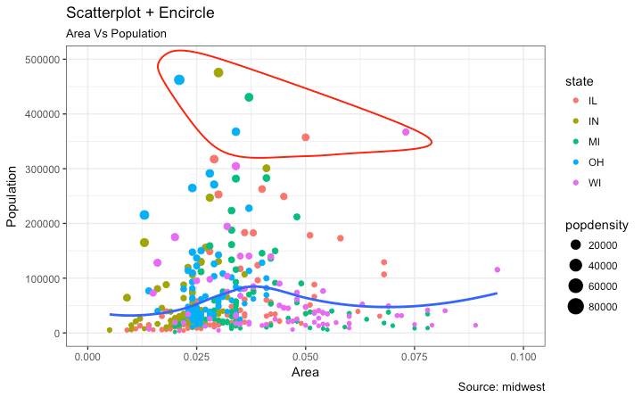
[Back to Top]Jitter Plot
Let’s look at a new data to draw the scatterplot. This time, I will use the mpg dataset to plot city mileage (cty) vs highway mileage (hwy).
# load package and data
library(ggplot2)
data(mpg, package="ggplot2") # alternate source: "http://goo.gl/uEeRGu")
theme_set(theme_bw()) # pre-set the bw theme.
g <- ggplot(mpg, aes(cty, hwy))
# Scatterplot
g + geom_point() +
geom_smooth(method="lm", se=F) +
labs(subtitle="mpg: city vs highway mileage",
y="hwy",
x="cty",
title="Scatterplot with overlapping points",
caption="Source: midwest")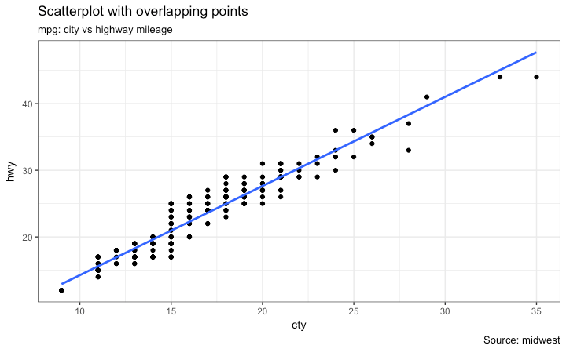
What we have here is a scatterplot of city and highway mileage in mpg dataset. We have seen a similar scatterplot and this looks neat and gives a clear idea of how the city mileage (cty) and highway mileage (hwy) are well correlated.
But, this innocent looking plot is hiding something. Can you find out?
dim(mpg)The original data has 234 data points but the chart seems to display fewer points. What has happened? This is because there are many overlapping points appearing as a single dot. The fact that both cty and hwy are integers in the source dataset made it all the more convenient to hide this detail. So just be extra careful the next time you make scatterplot with integers.
So how to handle this? There are few options. We can make a jitter plot with jitter_geom(). As the name suggests, the overlapping points are randomly jittered around its original position based on a threshold controlled by the width argument.
# load package and data
library(ggplot2)
data(mpg, package="ggplot2")
# mpg <- read.csv("http://goo.gl/uEeRGu")
# Scatterplot
theme_set(theme_bw()) # pre-set the bw theme.
g <- ggplot(mpg, aes(cty, hwy))
g + geom_jitter(width = .5, size=1) +
labs(subtitle="mpg: city vs highway mileage",
y="hwy",
x="cty",
title="Jittered Points")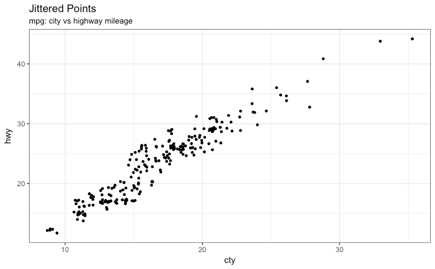
More points are revealed now. More thewidth, more the points are moved jittered from their original position.
Counts Chart
The second option to overcome the problem of data points overlap is to use what is called a counts chart. Whereever there is more points overlap, the size of the circle gets bigger.
# load package and data
library(ggplot2)
data(mpg, package="ggplot2")
# mpg <- read.csv("http://goo.gl/uEeRGu")
# Scatterplot
theme_set(theme_bw()) # pre-set the bw theme.
g <- ggplot(mpg, aes(cty, hwy))
g + geom_count(col="tomato3", show.legend=F) +
labs(subtitle="mpg: city vs highway mileage",
y="hwy",
x="cty",
title="Counts Plot")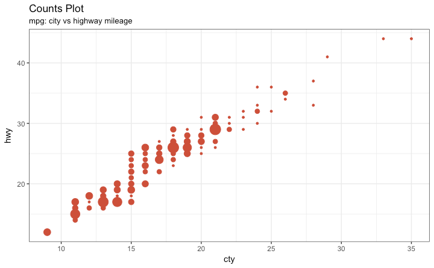
Bubble plot
While scatterplot lets you compare the relationship between 2 continuous variables, bubble chart serves well if you want to understand relationship within the underlying groups based on:
- A Categorical variable (by changing the color) and
- Another continuous variable (by changing the size of points).
In simpler words, bubble charts are more suitable if you have 4-Dimensional data where two of them are numeric (X and Y) and one other categorical (color) and another numeric variable (size).
The bubble chart clearly distinguishes the range of displ between the manufacturers and how the slope of lines-of-best-fit varies, providing a better visual comparison between the groups.
# load package and data
library(ggplot2)
data(mpg, package="ggplot2")
# mpg <- read.csv("http://goo.gl/uEeRGu")
mpg_select <- mpg[mpg$manufacturer %in% c("audi", "ford", "honda", "hyundai"), ]
# Scatterplot
theme_set(theme_bw()) # pre-set the bw theme.
g <- ggplot(mpg_select, aes(displ, cty)) +
labs(subtitle="mpg: Displacement vs City Mileage",
title="Bubble chart")
g + geom_jitter(aes(col=manufacturer, size=hwy)) +
geom_smooth(aes(col=manufacturer), method="lm", se=F)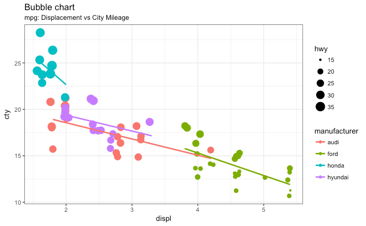
Animated Bubble chart
An animated bubble chart can be implemented using the gganimate package. It is same as the bubble chart, but, you have to show how the values change over a fifth dimension (typically time).
The key thing to do is to set the aes(frame) to the desired column on which you want to animate. Rest of the procedure related to plot construction is the same. Once the plot is constructed, you can animate it using gganimate() by setting a chosen interval.
# Source: https://github.com/dgrtwo/gganimate
# install.packages("cowplot") # a gganimate dependency
# devtools::install_github("dgrtwo/gganimate")
library(ggplot2)
library(gganimate)
library(gapminder)
theme_set(theme_bw()) # pre-set the bw theme.
g <- ggplot(gapminder, aes(gdpPercap, lifeExp, size = pop, frame = year)) +
geom_point() +
geom_smooth(aes(group = year),
method = "lm",
show.legend = FALSE) +
facet_wrap(~continent, scales = "free") +
scale_x_log10() # convert to log scale
gganimate(g, interval=0.2)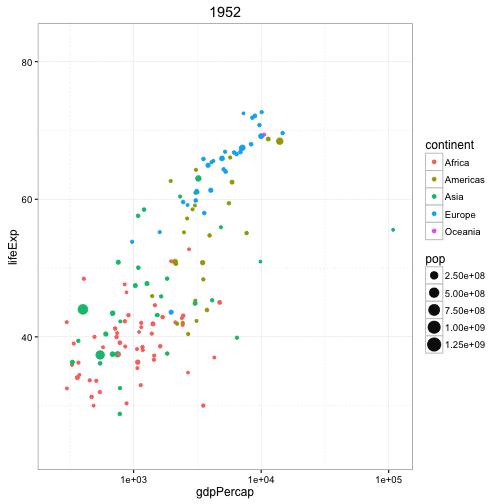
Marginal Histogram / Boxplot
If you want to show the relationship as well as the distribution in the same chart, use the marginal histogram. It has a histogram of the X and Y variables at the margins of the scatterplot.
This can be implemented using the ggMarginal() function from the ‘ggExtra’ package. Apart from a histogram, you could choose to draw a marginal boxplot or density plot by setting the respective type option.
# load package and data
library(ggplot2)
library(ggExtra)
data(mpg, package="ggplot2")
# mpg <- read.csv("http://goo.gl/uEeRGu")
# Scatterplot
theme_set(theme_bw()) # pre-set the bw theme.
mpg_select <- mpg[mpg$hwy >= 35 & mpg$cty > 27, ]
g <- ggplot(mpg, aes(cty, hwy)) +
geom_count() +
geom_smooth(method="lm", se=F)
ggMarginal(g, type = "histogram", fill="transparent")
ggMarginal(g, type = "boxplot", fill="transparent")
# ggMarginal(g, type = "density", fill="transparent")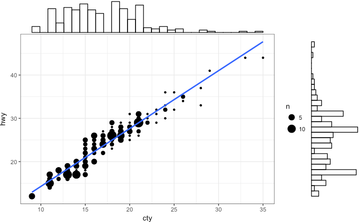
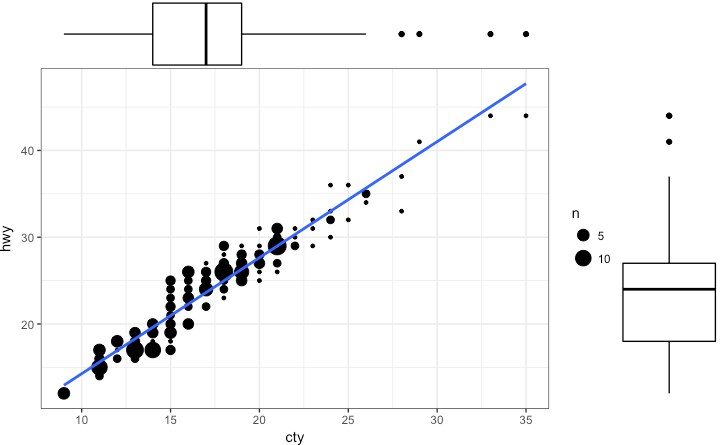
Correlogram
Correlogram let’s you examine the corellation of multiple continuous variables present in the same dataframe. This is conveniently implemented using the ggcorrplot package.
# devtools::install_github("kassambara/ggcorrplot")
library(ggplot2)
library(ggcorrplot)
# Correlation matrix
data(mtcars)
corr <- round(cor(mtcars), 1)
# Plot
ggcorrplot(corr, hc.order = TRUE,
type = "lower",
lab = TRUE,
lab_size = 3,
method="circle",
colors = c("tomato2", "white", "springgreen3"),
title="Correlogram of mtcars",
ggtheme=theme_bw)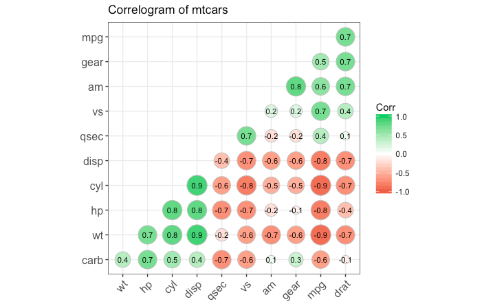
2. Deviation
Compare variation in values between small number of items (or categories) with respect to a fixed reference.
Diverging bars
Diverging Bars is a bar chart that can handle both negative and positive values. This can be implemented by a smart tweak with geom_bar(). But the usage of geom_bar() can be quite confusing. Thats because, it can be used to make a bar chart as well as a histogram. Let me explain.
By default, geom_bar() has the stat set to count. That means, when you provide just a continuous X variable (and no Y variable), it tries to make a histogram out of the data.
In order to make a bar chart create bars instead of histogram, you need to do two things.
- Set
stat=identity - Provide both
xandyinsideaes()where,xis eithercharacterorfactorandyis numeric.
In order to make sure you get diverging bars instead of just bars, make sure, your categorical variable has 2 categories that changes values at a certain threshold of the continuous variable. In below example, the mpg from mtcars dataset is normalised by computing the z score. Those vehicles with mpg above zero are marked green and those below are marked red.
library(ggplot2)
theme_set(theme_bw())
# Data Prep
data("mtcars") # load data
mtcars$`car name` <- rownames(mtcars) # create new column for car names
mtcars$mpg_z <- round((mtcars$mpg - mean(mtcars$mpg))/sd(mtcars$mpg), 2) # compute normalized mpg
mtcars$mpg_type <- ifelse(mtcars$mpg_z < 0, "below", "above") # above / below avg flag
mtcars <- mtcars[order(mtcars$mpg_z), ] # sort
mtcars$`car name` <- factor(mtcars$`car name`, levels = mtcars$`car name`) # convert to factor to retain sorted order in plot.
# Diverging Barcharts
ggplot(mtcars, aes(x=`car name`, y=mpg_z, label=mpg_z)) +
geom_bar(stat='identity', aes(fill=mpg_type), width=.5) +
scale_fill_manual(name="Mileage",
labels = c("Above Average", "Below Average"),
values = c("above"="#00ba38", "below"="#f8766d")) +
labs(subtitle="Normalised mileage from 'mtcars'",
title= "Diverging Bars") +
coord_flip()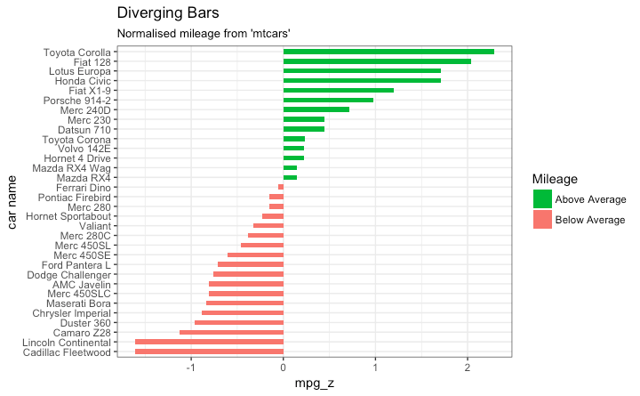
Diverging Lollipop Chart
Lollipop chart conveys the same information as bar chart and diverging bar. Except that it looks more modern. Instead of geom_bar, I use geom_point and geom_segment to get the lollipops right. Let’s draw a lollipop using the same data I prepared in the previous example of diverging bars.
library(ggplot2)
theme_set(theme_bw())
ggplot(mtcars, aes(x=`car name`, y=mpg_z, label=mpg_z)) +
geom_point(stat='identity', fill="black", size=6) +
geom_segment(aes(y = 0,
x = `car name`,
yend = mpg_z,
xend = `car name`),
color = "black") +
geom_text(color="white", size=2) +
labs(title="Diverging Lollipop Chart",
subtitle="Normalized mileage from 'mtcars': Lollipop") +
ylim(-2.5, 2.5) +
coord_flip()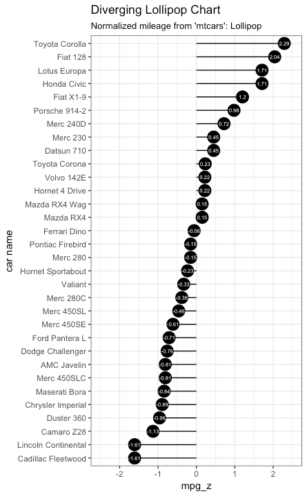
Diverging Dot Plot
Dot plot conveys similar information. The principles are same as what we saw in Diverging bars, except that only point are used. Below example uses the same data prepared in the diverging bars example.
library(ggplot2)
theme_set(theme_bw())
# Plot
ggplot(mtcars, aes(x=`car name`, y=mpg_z, label=mpg_z)) +
geom_point(stat='identity', aes(col=mpg_type), size=6) +
scale_color_manual(name="Mileage",
labels = c("Above Average", "Below Average"),
values = c("above"="#00ba38", "below"="#f8766d")) +
geom_text(color="white", size=2) +
labs(title="Diverging Dot Plot",
subtitle="Normalized mileage from 'mtcars': Dotplot") +
ylim(-2.5, 2.5) +
coord_flip()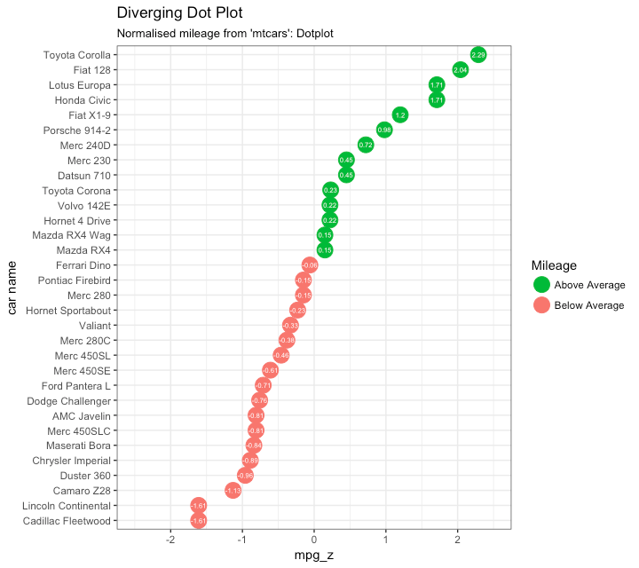
Area Chart
Area charts are typically used to visualize how a particular metric (such as % returns from a stock) performed compared to a certain baseline. Other types of %returns or %change data are also commonly used. The geom_area() implements this.
library(ggplot2)
library(quantmod)
data("economics", package = "ggplot2")
# Compute % Returns
economics$returns_perc <- c(0, diff(economics$psavert)/economics$psavert[-length(economics$psavert)])
# Create break points and labels for axis ticks
brks <- economics$date[seq(1, length(economics$date), 12)]
lbls <- lubridate::year(economics$date[seq(1, length(economics$date), 12)])
# Plot
ggplot(economics[1:100, ], aes(date, returns_perc)) +
geom_area() +
scale_x_date(breaks=brks, labels=lbls) +
theme(axis.text.x = element_text(angle=90)) +
labs(title="Area Chart",
subtitle = "Perc Returns for Personal Savings",
y="% Returns for Personal savings",
caption="Source: economics")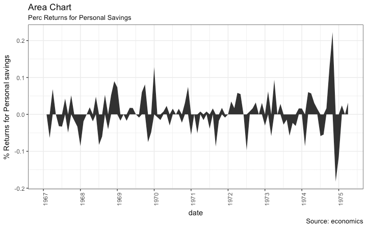
3. Ranking
Used to compare the position or performance of multiple items with respect to each other. Actual values matters somewhat less than the ranking.
Ordered Bar Chart
Ordered Bar Chart is a Bar Chart that is ordered by the Y axis variable. Just sorting the dataframe by the variable of interest isn’t enough to order the bar chart. In order for the bar chart to retain the order of the rows, the X axis variable (i.e. the categories) has to be converted into a factor.
Let’s plot the mean city mileage for each manufacturer from mpg dataset. First, aggregate the data and sort it before you draw the plot. Finally, the X variable is converted to a factor.
Let’s see how that is done.
# Prepare data: group mean city mileage by manufacturer.
cty_mpg <- aggregate(mpg$cty, by=list(mpg$manufacturer), FUN=mean) # aggregate
colnames(cty_mpg) <- c("make", "mileage") # change column names
cty_mpg <- cty_mpg[order(cty_mpg$mileage), ] # sort
cty_mpg$make <- factor(cty_mpg$make, levels = cty_mpg$make) # to retain the order in plot.
head(cty_mpg, 4)
#> make mileage
#> 9 lincoln 11.33333
#> 8 land rover 11.50000
#> 3 dodge 13.13514
#> 10 mercury 13.25000The X variable is now a factor, let’s plot.
library(ggplot2)
theme_set(theme_bw())
# Draw plot
ggplot(cty_mpg, aes(x=make, y=mileage)) +
geom_bar(stat="identity", width=.5, fill="tomato3") +
labs(title="Ordered Bar Chart",
subtitle="Make Vs Avg. Mileage",
caption="source: mpg") +
theme(axis.text.x = element_text(angle=65, vjust=0.6))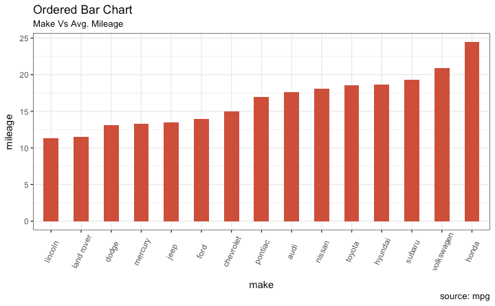
Lollipop Chart
Lollipop charts conveys the same information as in bar charts. By reducing the thick bars into thin lines, it reduces the clutter and lays more emphasis on the value. It looks nice and modern.
library(ggplot2)
theme_set(theme_bw())
# Plot
ggplot(cty_mpg, aes(x=make, y=mileage)) +
geom_point(size=3) +
geom_segment(aes(x=make,
xend=make,
y=0,
yend=mileage)) +
labs(title="Lollipop Chart",
subtitle="Make Vs Avg. Mileage",
caption="source: mpg") +
theme(axis.text.x = element_text(angle=65, vjust=0.6))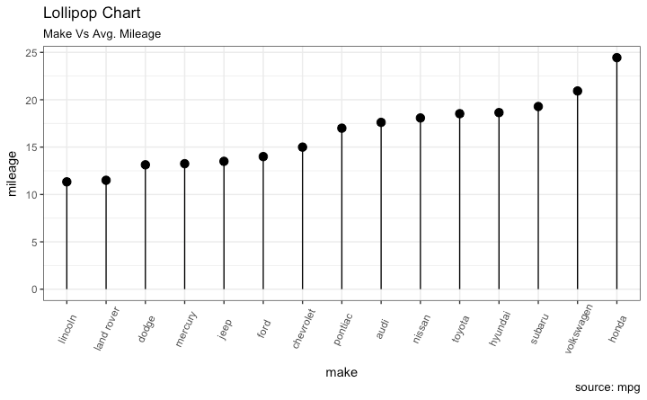
Dot Plot
Dot plots are very similar to lollipops, but without the line and is flipped to horizontal position. It emphasizes more on the rank ordering of items with respect to actual values and how far apart are the entities with respect to each other.
library(ggplot2)
library(scales)
theme_set(theme_classic())
# Plot
ggplot(cty_mpg, aes(x=make, y=mileage)) +
geom_point(col="tomato2", size=3) + # Draw points
geom_segment(aes(x=make,
xend=make,
y=min(mileage),
yend=max(mileage)),
linetype="dashed",
size=0.1) + # Draw dashed lines
labs(title="Dot Plot",
subtitle="Make Vs Avg. Mileage",
caption="source: mpg") +
coord_flip()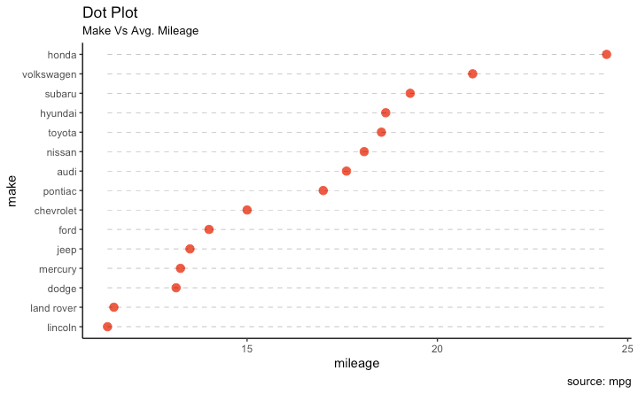
Slope Chart
Slope charts are an excellent way of comparing the positional placements between 2 points on time. At the moment, there is no builtin function to construct this. Following code serves as a pointer about how you may approach this.
library(ggplot2)
library(scales)
theme_set(theme_classic())
# prep data
df <- read.csv("https://raw.githubusercontent.com/selva86/datasets/master/gdppercap.csv")
colnames(df) <- c("continent", "1952", "1957")
left_label <- paste(df$continent, round(df$`1952`),sep=", ")
right_label <- paste(df$continent, round(df$`1957`),sep=", ")
df$class <- ifelse((df$`1957` - df$`1952`) < 0, "red", "green")
# Plot
p <- ggplot(df) + geom_segment(aes(x=1, xend=2, y=`1952`, yend=`1957`, col=class), size=.75, show.legend=F) +
geom_vline(xintercept=1, linetype="dashed", size=.1) +
geom_vline(xintercept=2, linetype="dashed", size=.1) +
scale_color_manual(labels = c("Up", "Down"),
values = c("green"="#00ba38", "red"="#f8766d")) + # color of lines
labs(x="", y="Mean GdpPerCap") + # Axis labels
xlim(.5, 2.5) + ylim(0,(1.1*(max(df$`1952`, df$`1957`)))) # X and Y axis limits
# Add texts
p <- p + geom_text(label=left_label, y=df$`1952`, x=rep(1, NROW(df)), hjust=1.1, size=3.5)
p <- p + geom_text(label=right_label, y=df$`1957`, x=rep(2, NROW(df)), hjust=-0.1, size=3.5)
p <- p + geom_text(label="Time 1", x=1, y=1.1*(max(df$`1952`, df$`1957`)), hjust=1.2, size=5) # title
p <- p + geom_text(label="Time 2", x=2, y=1.1*(max(df$`1952`, df$`1957`)), hjust=-0.1, size=5) # title
# Minify theme
p + theme(panel.background = element_blank(),
panel.grid = element_blank(),
axis.ticks = element_blank(),
axis.text.x = element_blank(),
panel.border = element_blank(),
plot.margin = unit(c(1,2,1,2), "cm"))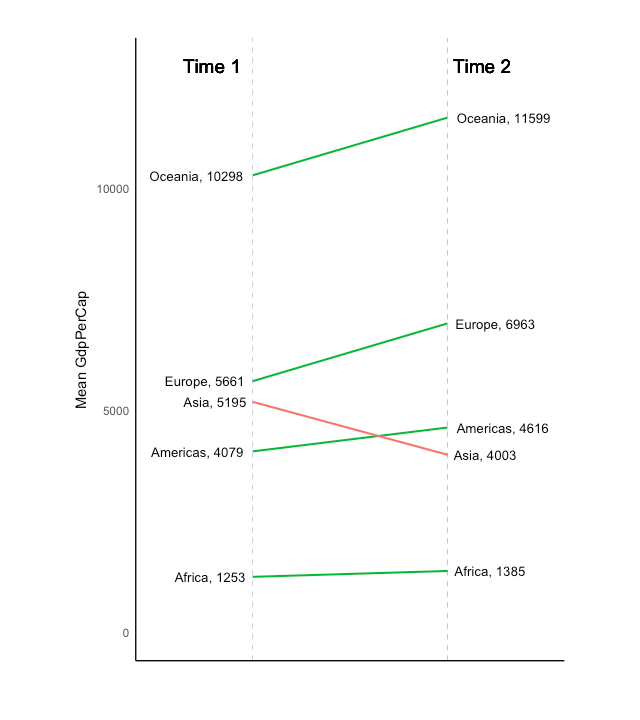
Dumbbell Plot
Dumbbell charts are a great tool if you wish to: 1. Visualize relative positions (like growth and decline) between two points in time. 2. Compare distance between two categories.
In order to get the correct ordering of the dumbbells, the Y variable should be a factor and the levels of the factor variable should be in the same order as it should appear in the plot.
# devtools::install_github("hrbrmstr/ggalt")
library(ggplot2)
library(ggalt)
theme_set(theme_classic())
health <- read.csv("https://raw.githubusercontent.com/selva86/datasets/master/health.csv")
health$Area <- factor(health$Area, levels=as.character(health$Area)) # for right ordering of the dumbells
# health$Area <- factor(health$Area)
gg <- ggplot(health, aes(x=pct_2013, xend=pct_2014, y=Area, group=Area)) +
geom_dumbbell(color="#a3c4dc",
size=0.75,
point.colour.l="#0e668b") +
scale_x_continuous(label=percent) +
labs(x=NULL,
y=NULL,
title="Dumbbell Chart",
subtitle="Pct Change: 2013 vs 2014",
caption="Source: https://github.com/hrbrmstr/ggalt") +
theme(plot.title = element_text(hjust=0.5, face="bold"),
plot.background=element_rect(fill="#f7f7f7"),
panel.background=element_rect(fill="#f7f7f7"),
panel.grid.minor=element_blank(),
panel.grid.major.y=element_blank(),
panel.grid.major.x=element_line(),
axis.ticks=element_blank(),
legend.position="top",
panel.border=element_blank())
plot(gg)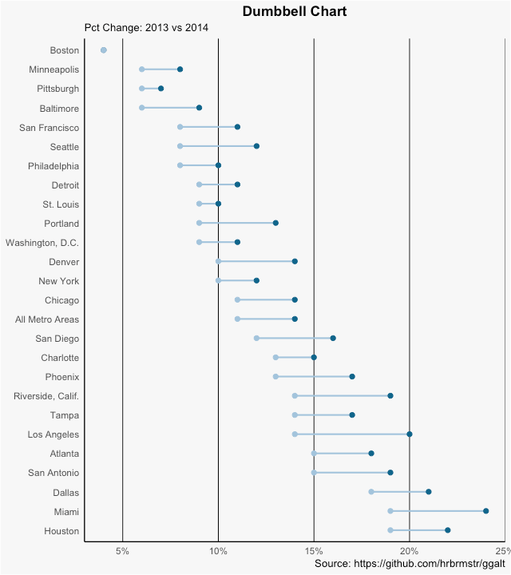
4. Distribution
When you have lots and lots of data points and want to study where and how the data points are distributed.
Histogram
By default, if only one variable is supplied, the geom_bar() tries to calculate the count. In order for it to behave like a bar chart, the stat=identity option has to be set and x and y values must be provided.
Histogram on a continuous variable
Histogram on a continuous variable can be accomplished using either geom_bar() or geom_histogram(). When using geom_histogram(), you can control the number of bars using the bins option. Else, you can set the range covered by each bin using binwidth. The value of binwidth is on the same scale as the continuous variable on which histogram is built. Since, geom_histogram gives facility to control both number of bins as well as binwidth, it is the preferred option to create histogram on continuous variables.
library(ggplot2)
theme_set(theme_classic())
# Histogram on a Continuous (Numeric) Variable
g <- ggplot(mpg, aes(displ)) + scale_fill_brewer(palette = "Spectral")
g + geom_histogram(aes(fill=class),
binwidth = .1,
col="black",
size=.1) + # change binwidth
labs(title="Histogram with Auto Binning",
subtitle="Engine Displacement across Vehicle Classes")
g + geom_histogram(aes(fill=class),
bins=5,
col="black",
size=.1) + # change number of bins
labs(title="Histogram with Fixed Bins",
subtitle="Engine Displacement across Vehicle Classes") 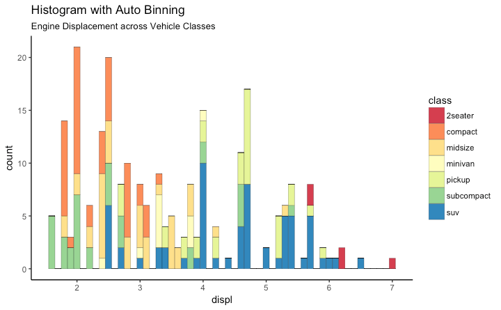
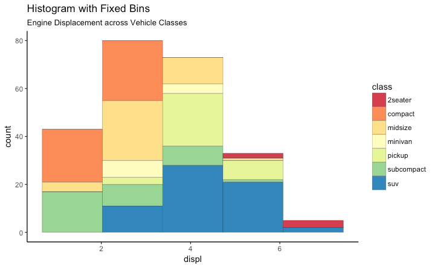
Histogram on a categorical variable
Histogram on a categorical variable would result in a frequency chart showing bars for each category. By adjusting width, you can adjust the thickness of the bars.
library(ggplot2)
theme_set(theme_classic())
# Histogram on a Categorical variable
g <- ggplot(mpg, aes(manufacturer))
g + geom_bar(aes(fill=class), width = 0.5) +
theme(axis.text.x = element_text(angle=65, vjust=0.6)) +
labs(title="Histogram on Categorical Variable",
subtitle="Manufacturer across Vehicle Classes") 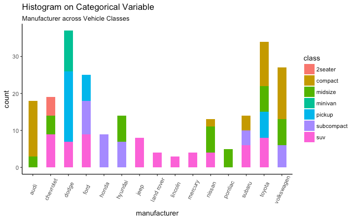
Density plot
library(ggplot2)
theme_set(theme_classic())
# Plot
g <- ggplot(mpg, aes(cty))
g + geom_density(aes(fill=factor(cyl)), alpha=0.8) +
labs(title="Density plot",
subtitle="City Mileage Grouped by Number of cylinders",
caption="Source: mpg",
x="City Mileage",
fill="# Cylinders")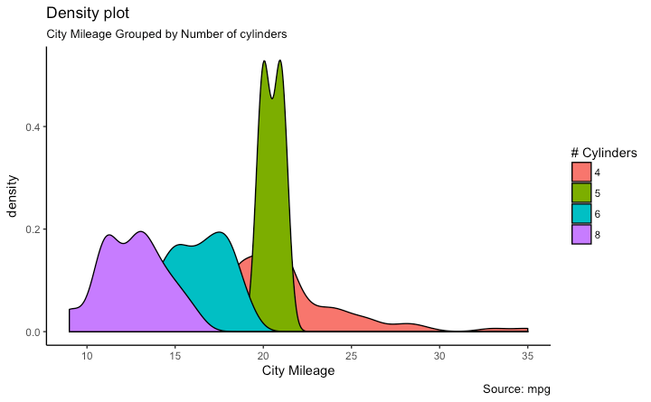
Box Plot
Box plot is an excellent tool to study the distribution. It can also show the distributions within multiple groups, along with the median, range and outliers if any.
The dark line inside the box represents the median. The top of box is 75%ile and bottom of box is 25%ile. The end points of the lines (aka whiskers) is at a distance of 1.5*IQR, where IQR or Inter Quartile Range is the distance between 25th and 75th percentiles. The points outside the whiskers are marked as dots and are normally considered as extreme points.
Setting varwidth=T adjusts the width of the boxes to be proportional to the number of observation it contains.
library(ggplot2)
theme_set(theme_classic())
# Plot
g <- ggplot(mpg, aes(class, cty))
g + geom_boxplot(varwidth=T, fill="plum") +
labs(title="Box plot",
subtitle="City Mileage grouped by Class of vehicle",
caption="Source: mpg",
x="Class of Vehicle",
y="City Mileage")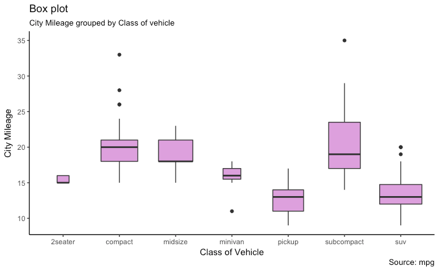
library(ggthemes)
g <- ggplot(mpg, aes(class, cty))
g + geom_boxplot(aes(fill=factor(cyl))) +
theme(axis.text.x = element_text(angle=65, vjust=0.6)) +
labs(title="Box plot",
subtitle="City Mileage grouped by Class of vehicle",
caption="Source: mpg",
x="Class of Vehicle",
y="City Mileage")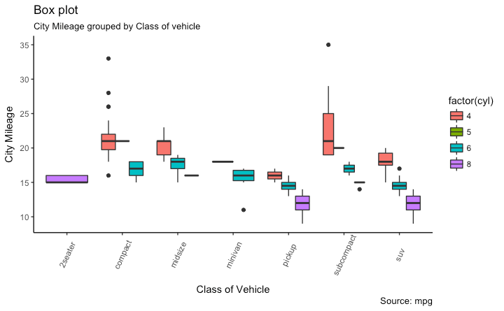
Dot + Box Plot
On top of the information provided by a box plot, the dot plot can provide more clear information in the form of summary statistics by each group. The dots are staggered such that each dot represents one observation. So, in below chart, the number of dots for a given manufacturer will match the number of rows of that manufacturer in source data.
library(ggplot2)
theme_set(theme_bw())
# plot
g <- ggplot(mpg, aes(manufacturer, cty))
g + geom_boxplot() +
geom_dotplot(binaxis='y',
stackdir='center',
dotsize = .5,
fill="red") +
theme(axis.text.x = element_text(angle=65, vjust=0.6)) +
labs(title="Box plot + Dot plot",
subtitle="City Mileage vs Class: Each dot represents 1 row in source data",
caption="Source: mpg",
x="Class of Vehicle",
y="City Mileage")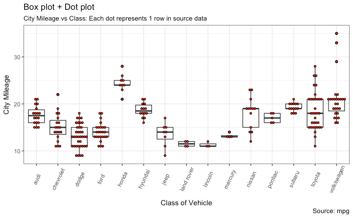
Tufte Boxplot
Tufte box plot, provided by ggthemes package is inspired by the works of Edward Tufte. Tufte’s Box plot is just a box plot made minimal and visually appealing.
library(ggthemes)
library(ggplot2)
theme_set(theme_tufte()) # from ggthemes
# plot
g <- ggplot(mpg, aes(manufacturer, cty))
g + geom_tufteboxplot() +
theme(axis.text.x = element_text(angle=65, vjust=0.6)) +
labs(title="Tufte Styled Boxplot",
subtitle="City Mileage grouped by Class of vehicle",
caption="Source: mpg",
x="Class of Vehicle",
y="City Mileage")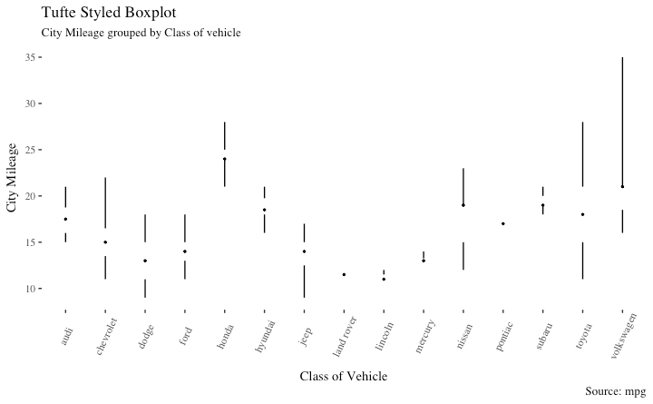
Violin Plot
A violin plot is similar to box plot but shows the density within groups. Not much info provided as in boxplots. It can be drawn using geom_violin().
library(ggplot2)
theme_set(theme_bw())
# plot
g <- ggplot(mpg, aes(class, cty))
g + geom_violin() +
labs(title="Violin plot",
subtitle="City Mileage vs Class of vehicle",
caption="Source: mpg",
x="Class of Vehicle",
y="City Mileage")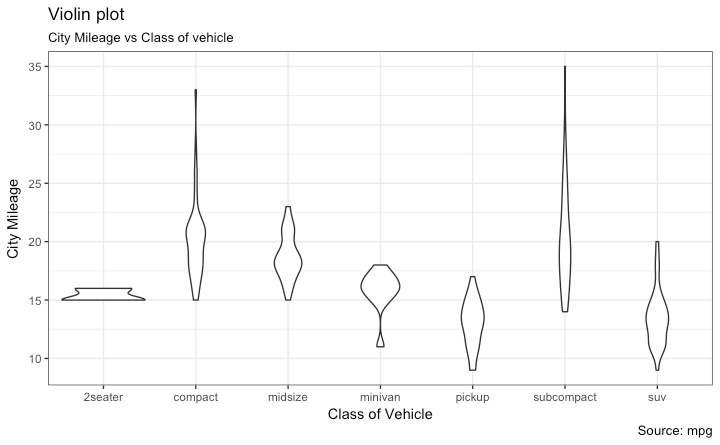
Population Pyramid
Population pyramids offer a unique way of visualizing how much population or what percentage of population fall under a certain category. The below pyramid is an excellent example of how many users are retained at each stage of a email marketing campaign funnel.
library(ggplot2)
library(ggthemes)
options(scipen = 999) # turns of scientific notations like 1e+40
# Read data
email_campaign_funnel <- read.csv("https://raw.githubusercontent.com/selva86/datasets/master/email_campaign_funnel.csv")
# X Axis Breaks and Labels
brks <- seq(-15000000, 15000000, 5000000)
lbls = paste0(as.character(c(seq(15, 0, -5), seq(5, 15, 5))), "m")
# Plot
ggplot(email_campaign_funnel, aes(x = Stage, y = Users, fill = Gender)) + # Fill column
geom_bar(stat = "identity", width = .6) + # draw the bars
scale_y_continuous(breaks = brks, # Breaks
labels = lbls) + # Labels
coord_flip() + # Flip axes
labs(title="Email Campaign Funnel") +
theme_tufte() + # Tufte theme from ggfortify
theme(plot.title = element_text(hjust = .5),
axis.ticks = element_blank()) + # Centre plot title
scale_fill_brewer(palette = "Dark2") # Color palette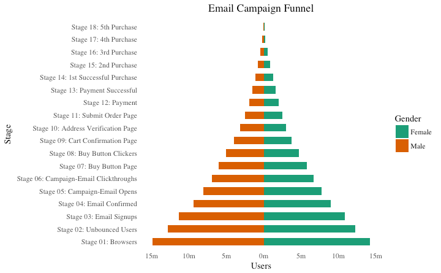
5. Composition
Waffle Chart
Waffle charts is a nice way of showing the categorical composition of the total population. Though there is no direct function, it can be articulated by smartly maneuvering the ggplot2 using geom_tile() function. The below template should help you create your own waffle.
var <- mpg$class # the categorical data
## Prep data (nothing to change here)
nrows <- 10
df <- expand.grid(y = 1:nrows, x = 1:nrows)
categ_table <- round(table(var) * ((nrows*nrows)/(length(var))))
categ_table
#> 2seater compact midsize minivan pickup subcompact suv
#> 2 20 18 5 14 15 26
df$category <- factor(rep(names(categ_table), categ_table))
# NOTE: if sum(categ_table) is not 100 (i.e. nrows^2), it will need adjustment to make the sum to 100.
## Plot
ggplot(df, aes(x = x, y = y, fill = category)) +
geom_tile(color = "black", size = 0.5) +
scale_x_continuous(expand = c(0, 0)) +
scale_y_continuous(expand = c(0, 0), trans = 'reverse') +
scale_fill_brewer(palette = "Set3") +
labs(title="Waffle Chart", subtitle="'Class' of vehicles",
caption="Source: mpg") +
theme(panel.border = element_rect(size = 2),
plot.title = element_text(size = rel(1.2)),
axis.text = element_blank(),
axis.title = element_blank(),
axis.ticks = element_blank(),
legend.title = element_blank(),
legend.position = "right")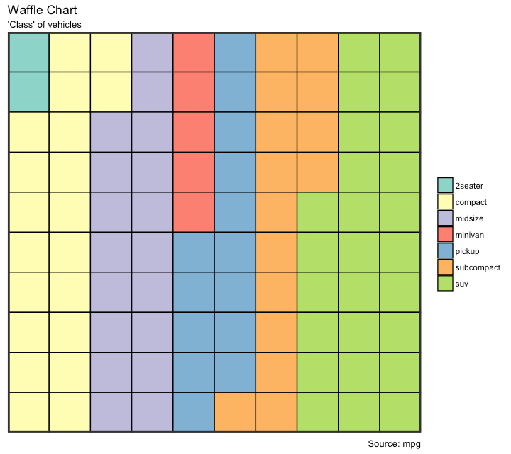
Pie Chart
Pie chart, a classic way of showing the compositions is equivalent to the waffle chart in terms of the information conveyed. But is a slightly tricky to implement in ggplot2 using the coord_polar().
library(ggplot2)
theme_set(theme_classic())
# Source: Frequency table
df <- as.data.frame(table(mpg$class))
colnames(df) <- c("class", "freq")
pie <- ggplot(df, aes(x = "", y=freq, fill = factor(class))) +
geom_bar(width = 1, stat = "identity") +
theme(axis.line = element_blank(),
plot.title = element_text(hjust=0.5)) +
labs(fill="class",
x=NULL,
y=NULL,
title="Pie Chart of class",
caption="Source: mpg")
pie + coord_polar(theta = "y", start=0)
# Source: Categorical variable.
# mpg$class
pie <- ggplot(mpg, aes(x = "", fill = factor(class))) +
geom_bar(width = 1) +
theme(axis.line = element_blank(),
plot.title = element_text(hjust=0.5)) +
labs(fill="class",
x=NULL,
y=NULL,
title="Pie Chart of class",
caption="Source: mpg")
pie + coord_polar(theta = "y", start=0)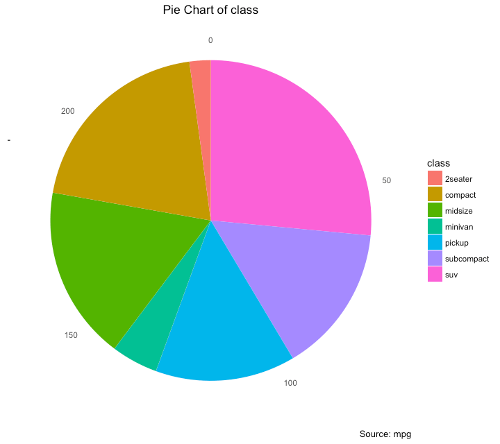
# http://www.r-graph-gallery.com/128-ring-or-donut-plot/Treemap
Treemap is a nice way of displaying hierarchical data by using nested rectangles. The treemapify package provides the necessary functions to convert the data in desired format (treemapify) as well as draw the actual plot (ggplotify).
In order to create a treemap, the data must be converted to desired format using treemapify(). The important requirement is, your data must have one variable each that describes the area of the tiles, variable for fill color, variable that has the tile’s label and finally the parent group.
Once the data formatting is done, just call ggplotify() on the treemapified data.
library(ggplot2)
library(treemapify)
proglangs <- read.csv("https://raw.githubusercontent.com/selva86/datasets/master/proglanguages.csv")
# plot
treeMapCoordinates <- treemapify(proglangs,
area = "value",
fill = "parent",
label = "id",
group = "parent")
treeMapPlot <- ggplotify(treeMapCoordinates) +
scale_x_continuous(expand = c(0, 0)) +
scale_y_continuous(expand = c(0, 0)) +
scale_fill_brewer(palette = "Dark2")
print(treeMapPlot)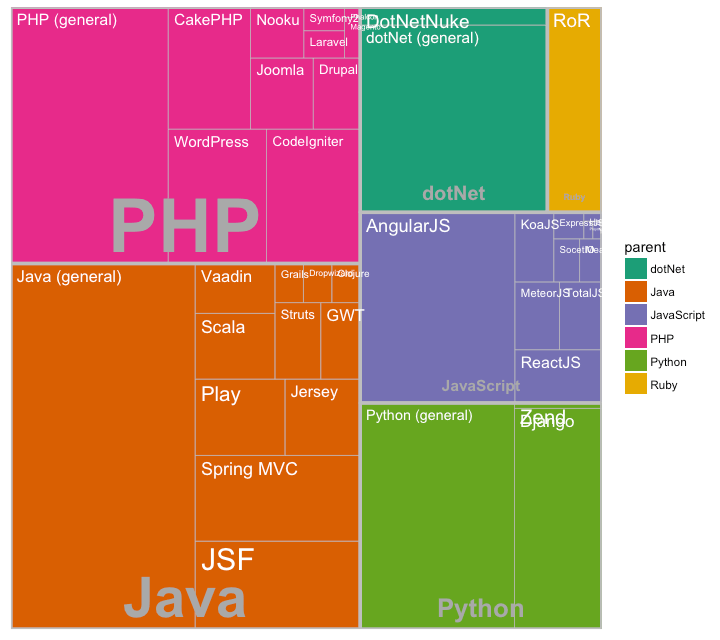
Bar Chart
By default, geom_bar() has the stat set to count. That means, when you provide just a continuous X variable (and no Y variable), it tries to make a histogram out of the data.
In order to make a bar chart create bars instead of histogram, you need to do two things.
- Set
stat=identity - Provide both
xandyinsideaes()where,xis eithercharacterorfactorandyis numeric.
A bar chart can be drawn from a categorical column variable or from a separate frequency table. By adjusting width, you can adjust the thickness of the bars. If your data source is a frequency table, that is, if you don’t want ggplot to compute the counts, you need to set the stat=identity inside the geom_bar().
# prep frequency table
freqtable <- table(mpg$manufacturer)
df <- as.data.frame.table(freqtable)
head(df)
#> Var1 Freq
#> 1 audi 18
#> 2 chevrolet 19
#> 3 dodge 37
#> 4 ford 25
#> 5 honda 9
#> 6 hyundai 14# plot
library(ggplot2)
theme_set(theme_classic())
# Plot
g <- ggplot(df, aes(Var1, Freq))
g + geom_bar(stat="identity", width = 0.5, fill="tomato2") +
labs(title="Bar Chart",
subtitle="Manufacturer of vehicles",
caption="Source: Frequency of Manufacturers from 'mpg' dataset") +
theme(axis.text.x = element_text(angle=65, vjust=0.6))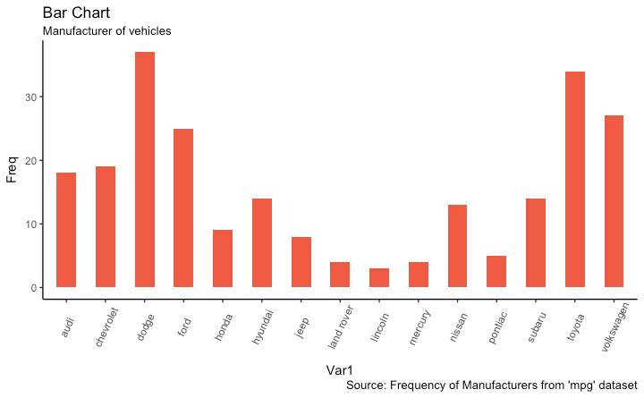
It can be computed directly from a column variable as well. In this case, only X is provided and stat=identity is not set.
# From on a categorical column variable
g <- ggplot(mpg, aes(manufacturer))
g + geom_bar(aes(fill=class), width = 0.5) +
theme(axis.text.x = element_text(angle=65, vjust=0.6)) +
labs(title="Categorywise Bar Chart",
subtitle="Manufacturer of vehicles",
caption="Source: Manufacturers from 'mpg' dataset")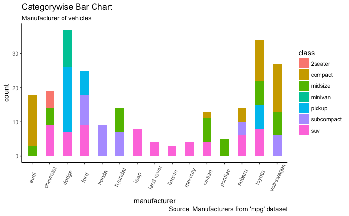
6. Change
Time Series Plot From a Time Series Object (ts)
The ggfortify package allows autoplot to automatically plot directly from a time series object (ts).
## From Timeseries object (ts)
library(ggplot2)
library(ggfortify)
theme_set(theme_classic())
# Plot
autoplot(AirPassengers) +
labs(title="AirPassengers") +
theme(plot.title = element_text(hjust=0.5))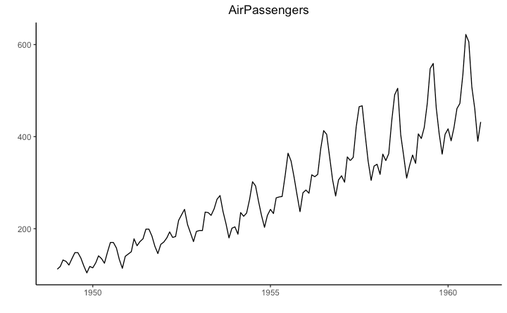
Time Series Plot From a Data Frame
Using geom_line(), a time series (or line chart) can be drawn from a data.frame as well. The X axis breaks are generated by default. In below example, the breaks are formed once every 10 years.
Default X Axis Labels
library(ggplot2)
theme_set(theme_classic())
# Allow Default X Axis Labels
ggplot(economics, aes(x=date)) +
geom_line(aes(y=returns_perc)) +
labs(title="Time Series Chart",
subtitle="Returns Percentage from 'Economics' Dataset",
caption="Source: Economics",
y="Returns %")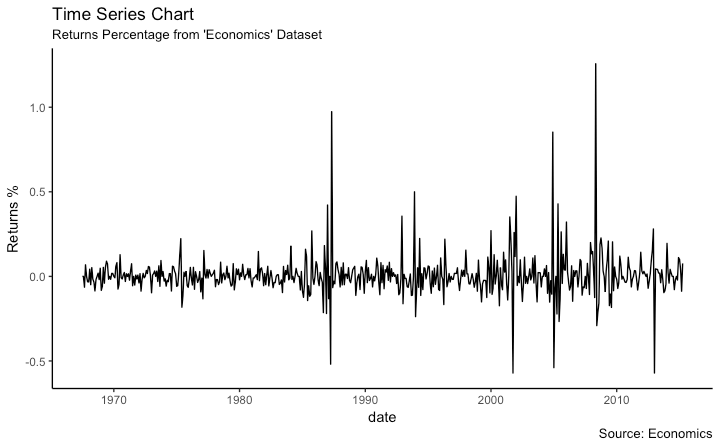
Time Series Plot For a Monthly Time Series
If you want to set your own time intervals (breaks) in X axis, you need to set the breaks and labels using scale_x_date().
library(ggplot2)
library(lubridate)
theme_set(theme_bw())
economics_m <- economics[1:24, ]
# labels and breaks for X axis text
lbls <- paste0(month.abb[month(economics_m$date)], " ", lubridate::year(economics_m$date))
brks <- economics_m$date
# plot
ggplot(economics_m, aes(x=date)) +
geom_line(aes(y=returns_perc)) +
labs(title="Monthly Time Series",
subtitle="Returns Percentage from Economics Dataset",
caption="Source: Economics",
y="Returns %") + # title and caption
scale_x_date(labels = lbls,
breaks = brks) + # change to monthly ticks and labels
theme(axis.text.x = element_text(angle = 90, vjust=0.5), # rotate x axis text
panel.grid.minor = element_blank()) # turn off minor grid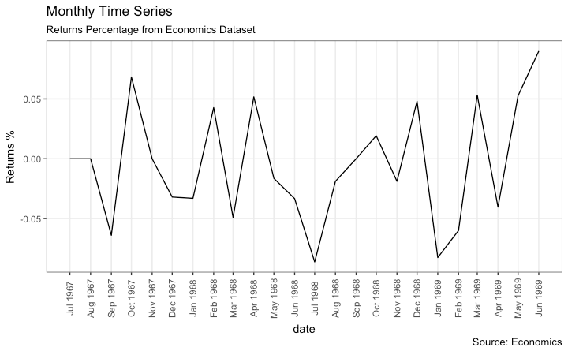
Time Series Plot For a Yearly Time Series
library(ggplot2)
library(lubridate)
theme_set(theme_bw())
economics_y <- economics[1:90, ]
# labels and breaks for X axis text
brks <- economics_y$date[seq(1, length(economics_y$date), 12)]
lbls <- lubridate::year(brks)
# plot
ggplot(economics_y, aes(x=date)) +
geom_line(aes(y=returns_perc)) +
labs(title="Yearly Time Series",
subtitle="Returns Percentage from Economics Dataset",
caption="Source: Economics",
y="Returns %") + # title and caption
scale_x_date(labels = lbls,
breaks = brks) + # change to monthly ticks and labels
theme(axis.text.x = element_text(angle = 90, vjust=0.5), # rotate x axis text
panel.grid.minor = element_blank()) # turn off minor grid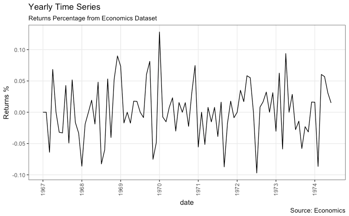
Time Series Plot From Long Data Format: Multiple Time Series in Same Dataframe Column
In this example, I construct the ggplot from a long data format. That means, the column names and respective values of all the columns are stacked in just 2 variables (variable and value respectively). If you were to convert this data to wide format, it would look like the economics dataset.
In below example, the geom_line is drawn for value column and the aes(col) is set to variable. This way, with just one call to geom_line, multiple colored lines are drawn, one each for each unique value in variable column. The scale_x_date() changes the X axis breaks and labels, and scale_color_manual changes the color of the lines.
data(economics_long, package = "ggplot2")
head(economics_long)
#> date variable value value01
#> <date> <fctr> <dbl> <dbl>
#> 1 1967-07-01 pce 507.4 0.0000000000
#> 2 1967-08-01 pce 510.5 0.0002660008
#> 3 1967-09-01 pce 516.3 0.0007636797
#> 4 1967-10-01 pce 512.9 0.0004719369
#> 5 1967-11-01 pce 518.1 0.0009181318
#> 6 1967-12-01 pce 525.8 0.0015788435library(ggplot2)
library(lubridate)
theme_set(theme_bw())
df <- economics_long[economics_long$variable %in% c("psavert", "uempmed"), ]
df <- df[lubridate::year(df$date) %in% c(1967:1981), ]
# labels and breaks for X axis text
brks <- df$date[seq(1, length(df$date), 12)]
lbls <- lubridate::year(brks)
# plot
ggplot(df, aes(x=date)) +
geom_line(aes(y=value, col=variable)) +
labs(title="Time Series of Returns Percentage",
subtitle="Drawn from Long Data format",
caption="Source: Economics",
y="Returns %",
color=NULL) + # title and caption
scale_x_date(labels = lbls, breaks = brks) + # change to monthly ticks and labels
scale_color_manual(labels = c("psavert", "uempmed"),
values = c("psavert"="#00ba38", "uempmed"="#f8766d")) + # line color
theme(axis.text.x = element_text(angle = 90, vjust=0.5, size = 8), # rotate x axis text
panel.grid.minor = element_blank()) # turn off minor grid
Time Series Plot From Wide Data Format: Data in Multiple Columns of Dataframe
As noted in the part 2 of this tutorial, whenever your plot’s geom (like points, lines, bars, etc) changes the fill, size, col, shape or stroke based on another column, a legend is automatically drawn.
But if you are creating a time series (or even other types of plots) from a wide data format, you have to draw each line manually by calling geom_line() once for every line. So, a legend will not be drawn by default.
However, having a legend would still be nice. This can be done using the scale_aesthetic_manual() format of functions (like, scale_color_manual() if only the color of your lines change). Using this function, you can give a legend title with the name argument, tell what color the legend should take with the values argument and also set the legend labels.
Even though the below plot looks exactly like the previous one, the approach to construct this is different.
You might wonder why I used this function in previous example for long data format as well. Note that, in previous example, it was used to change the color of the line only. Without scale_color_manual(), you would still have got a legend, but the lines would be of a different (default) color. But in current example, without scale_color_manual(), you wouldn’t even have a legend. Try it out!
library(ggplot2)
library(lubridate)
theme_set(theme_bw())
df <- economics[, c("date", "psavert", "uempmed")]
df <- df[lubridate::year(df$date) %in% c(1967:1981), ]
# labels and breaks for X axis text
brks <- df$date[seq(1, length(df$date), 12)]
lbls <- lubridate::year(brks)
# plot
ggplot(df, aes(x=date)) +
geom_line(aes(y=psavert, col="psavert")) +
geom_line(aes(y=uempmed, col="uempmed")) +
labs(title="Time Series of Returns Percentage",
subtitle="Drawn From Wide Data format",
caption="Source: Economics", y="Returns %") + # title and caption
scale_x_date(labels = lbls, breaks = brks) + # change to monthly ticks and labels
scale_color_manual(name="",
values = c("psavert"="#00ba38", "uempmed"="#f8766d")) + # line color
theme(panel.grid.minor = element_blank()) # turn off minor grid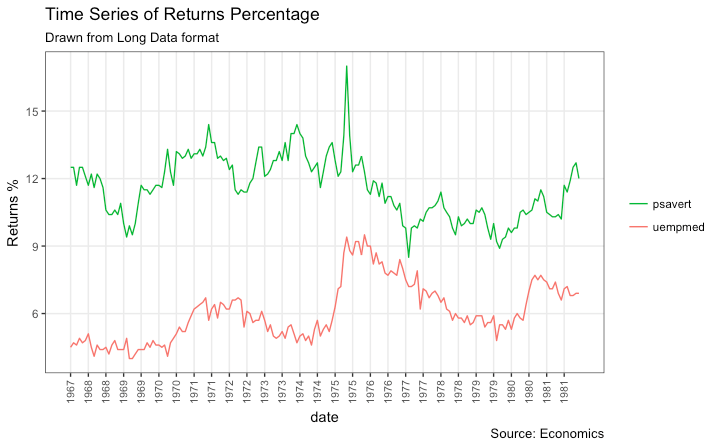
Stacked Area Chart
Stacked area chart is just like a line chart, except that the region below the plot is all colored. This is typically used when:
- You want to describe how a quantity or volume (rather than something like price) changed over time
- You have many data points. For very few data points, consider plotting a bar chart.
- You want to show the contribution from individual components.
This can be plotted using geom_area which works very much like geom_line. But there is an important point to note. By default, each geom_area() starts from the bottom of Y axis (which is typically 0), but, if you want to show the contribution from individual components, you want the geom_area to be stacked over the top of previous component, rather than the floor of the plot itself. So, you have to add all the bottom layers while setting the y of geom_area.
In below example, I have set it as y=psavert+uempmed for the topmost geom_area().
However nice the plot looks, the caveat is that, it can easily become complicated and uninterprettable if there are too many components.
library(ggplot2)
library(lubridate)
theme_set(theme_bw())
df <- economics[, c("date", "psavert", "uempmed")]
df <- df[lubridate::year(df$date) %in% c(1967:1981), ]
# labels and breaks for X axis text
brks <- df$date[seq(1, length(df$date), 12)]
lbls <- lubridate::year(brks)
# plot
ggplot(df, aes(x=date)) +
geom_area(aes(y=psavert+uempmed, fill="psavert")) +
geom_area(aes(y=uempmed, fill="uempmed")) +
labs(title="Area Chart of Returns Percentage",
subtitle="From Wide Data format",
caption="Source: Economics",
y="Returns %") + # title and caption
scale_x_date(labels = lbls, breaks = brks) + # change to monthly ticks and labels
scale_fill_manual(name="",
values = c("psavert"="#00ba38", "uempmed"="#f8766d")) + # line color
theme(panel.grid.minor = element_blank()) # turn off minor grid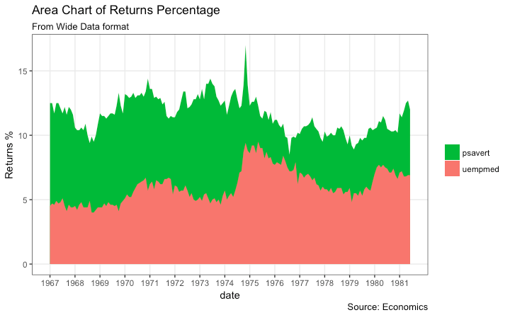
Calendar Heatmap
When you want to see the variation, especially the highs and lows, of a metric like stock price, on an actual calendar itself, the calendar heat map is a great tool. It emphasizes the variation visually over time rather than the actual value itself.
This can be implemented using the geom_tile. But getting it in the right format has more to do with the data preparation rather than the plotting itself.
# http://margintale.blogspot.in/2012/04/ggplot2-time-series-heatmaps.html
library(ggplot2)
library(plyr)
library(scales)
library(zoo)
df <- read.csv("https://raw.githubusercontent.com/selva86/datasets/master/yahoo.csv")
df$date <- as.Date(df$date) # format date
df <- df[df$year >= 2012, ] # filter reqd years
# Create Month Week
df$yearmonth <- as.yearmon(df$date)
df$yearmonthf <- factor(df$yearmonth)
df <- ddply(df,.(yearmonthf), transform, monthweek=1+week-min(week)) # compute week number of month
df <- df[, c("year", "yearmonthf", "monthf", "week", "monthweek", "weekdayf", "VIX.Close")]
head(df)
#> year yearmonthf monthf week monthweek weekdayf VIX.Close
#> 1 2012 Jan 2012 Jan 1 1 Tue 22.97
#> 2 2012 Jan 2012 Jan 1 1 Wed 22.22
#> 3 2012 Jan 2012 Jan 1 1 Thu 21.48
#> 4 2012 Jan 2012 Jan 1 1 Fri 20.63
#> 5 2012 Jan 2012 Jan 2 2 Mon 21.07
#> 6 2012 Jan 2012 Jan 2 2 Tue 20.69
# Plot
ggplot(df, aes(monthweek, weekdayf, fill = VIX.Close)) +
geom_tile(colour = "white") +
facet_grid(year~monthf) +
scale_fill_gradient(low="red", high="green") +
labs(x="Week of Month",
y="",
title = "Time-Series Calendar Heatmap",
subtitle="Yahoo Closing Price",
fill="Close")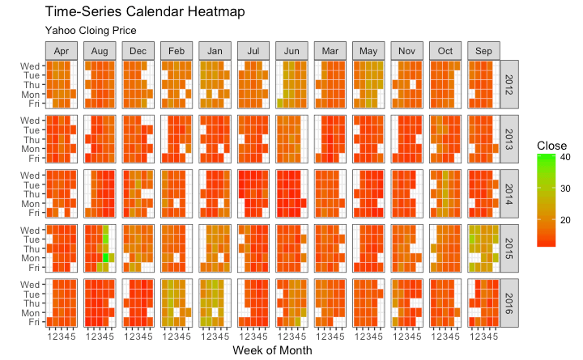
Slope Chart
Slope chart is a great tool of you want to visualize change in value and ranking between categories. This is more suitable over a time series when there are very few time points.
library(dplyr)
theme_set(theme_classic())
source_df <- read.csv("https://raw.githubusercontent.com/jkeirstead/r-slopegraph/master/cancer_survival_rates.csv")
# Define functions. Source: https://github.com/jkeirstead/r-slopegraph
tufte_sort <- function(df, x="year", y="value", group="group", method="tufte", min.space=0.05) {
## First rename the columns for consistency
ids <- match(c(x, y, group), names(df))
df <- df[,ids]
names(df) <- c("x", "y", "group")
## Expand grid to ensure every combination has a defined value
tmp <- expand.grid(x=unique(df$x), group=unique(df$group))
tmp <- merge(df, tmp, all.y=TRUE)
df <- mutate(tmp, y=ifelse(is.na(y), 0, y))
## Cast into a matrix shape and arrange by first column
require(reshape2)
tmp <- dcast(df, group ~ x, value.var="y")
ord <- order(tmp[,2])
tmp <- tmp[ord,]
min.space <- min.space*diff(range(tmp[,-1]))
yshift <- numeric(nrow(tmp))
## Start at "bottom" row
## Repeat for rest of the rows until you hit the top
for (i in 2:nrow(tmp)) {
## Shift subsequent row up by equal space so gap between
## two entries is >= minimum
mat <- as.matrix(tmp[(i-1):i, -1])
d.min <- min(diff(mat))
yshift[i] <- ifelse(d.min < min.space, min.space - d.min, 0)
}
tmp <- cbind(tmp, yshift=cumsum(yshift))
scale <- 1
tmp <- melt(tmp, id=c("group", "yshift"), variable.name="x", value.name="y")
## Store these gaps in a separate variable so that they can be scaled ypos = a*yshift + y
tmp <- transform(tmp, ypos=y + scale*yshift)
return(tmp)
}
plot_slopegraph <- function(df) {
ylabs <- subset(df, x==head(x,1))$group
yvals <- subset(df, x==head(x,1))$ypos
fontSize <- 3
gg <- ggplot(df,aes(x=x,y=ypos)) +
geom_line(aes(group=group),colour="grey80") +
geom_point(colour="white",size=8) +
geom_text(aes(label=y), size=fontSize, family="American Typewriter") +
scale_y_continuous(name="", breaks=yvals, labels=ylabs)
return(gg)
}
## Prepare data
df <- tufte_sort(source_df,
x="year",
y="value",
group="group",
method="tufte",
min.space=0.05)
df <- transform(df,
x=factor(x, levels=c(5,10,15,20),
labels=c("5 years","10 years","15 years","20 years")),
y=round(y))
## Plot
plot_slopegraph(df) + labs(title="Estimates of % survival rates") +
theme(axis.title=element_blank(),
axis.ticks = element_blank(),
plot.title = element_text(hjust=0.5,
family = "American Typewriter",
face="bold"),
axis.text = element_text(family = "American Typewriter",
face="bold"))Seasonal Plot
If you are working with a time series object of class ts or xts, you can view the seasonal fluctuations through a seasonal plot drawn using forecast::ggseasonplot. Below is an example using the native AirPassengers and nottem time series.
You can see the traffic increase in air passengers over the years along with the repetitive seasonal patterns in traffic. Whereas Nottingham does not show an increase in overal temperatures over the years, but they definitely follow a seasonal pattern.
library(ggplot2)
library(forecast)
theme_set(theme_classic())
# Subset data
nottem_small <- window(nottem, start=c(1920, 1), end=c(1925, 12)) # subset a smaller timewindow
# Plot
ggseasonplot(AirPassengers) + labs(title="Seasonal plot: International Airline Passengers")
ggseasonplot(nottem_small) + labs(title="Seasonal plot: Air temperatures at Nottingham Castle")
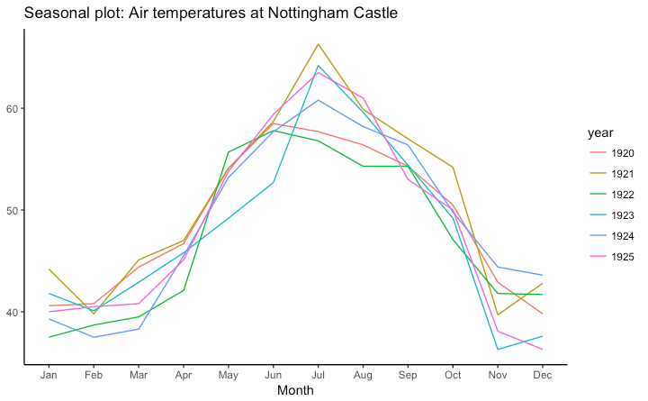
7. Groups
Hierarchical Dendrogram
# install.packages("ggdendro")
library(ggplot2)
library(ggdendro)
theme_set(theme_bw())
hc <- hclust(dist(USArrests), "ave") # hierarchical clustering
# plot
ggdendrogram(hc, rotate = TRUE, size = 2)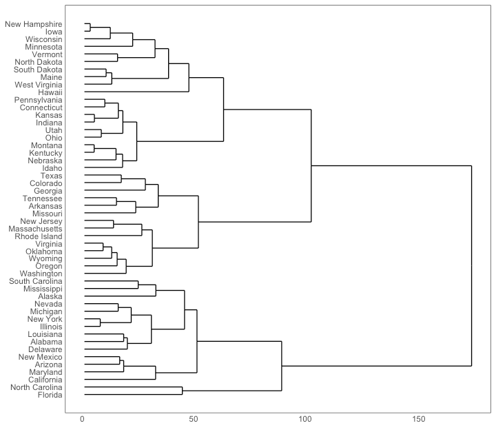
Clusters
It is possible to show the distinct clusters or groups using geom_encircle(). If the dataset has multiple weak features, you can compute the principal components and draw a scatterplot using PC1 and PC2 as X and Y axis.
The geom_encircle() can be used to encircle the desired groups. The only thing to note is the data argument to geom_circle(). You need to provide a subsetted dataframe that contains only the observations (rows) that belong to the group as the data argument.
# devtools::install_github("hrbrmstr/ggalt")
library(ggplot2)
library(ggalt)
library(ggfortify)
theme_set(theme_classic())
# Compute data with principal components ------------------
df <- iris[c(1, 2, 3, 4)]
pca_mod <- prcomp(df) # compute principal components
# Data frame of principal components ----------------------
df_pc <- data.frame(pca_mod$x, Species=iris$Species) # dataframe of principal components
df_pc_vir <- df_pc[df_pc$Species == "virginica", ] # df for 'virginica'
df_pc_set <- df_pc[df_pc$Species == "setosa", ] # df for 'setosa'
df_pc_ver <- df_pc[df_pc$Species == "versicolor", ] # df for 'versicolor'
# Plot ----------------------------------------------------
ggplot(df_pc, aes(PC1, PC2, col=Species)) +
geom_point(aes(shape=Species), size=2) + # draw points
labs(title="Iris Clustering",
subtitle="With principal components PC1 and PC2 as X and Y axis",
caption="Source: Iris") +
coord_cartesian(xlim = 1.2 * c(min(df_pc$PC1), max(df_pc$PC1)),
ylim = 1.2 * c(min(df_pc$PC2), max(df_pc$PC2))) + # change axis limits
geom_encircle(data = df_pc_vir, aes(x=PC1, y=PC2)) + # draw circles
geom_encircle(data = df_pc_set, aes(x=PC1, y=PC2)) +
geom_encircle(data = df_pc_ver, aes(x=PC1, y=PC2))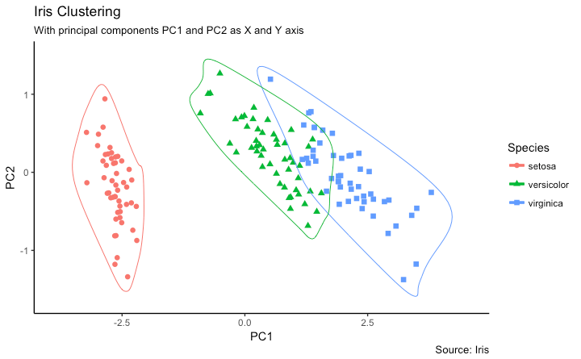
8. Spatial
The ggmap package provides facilities to interact with the google maps api and get the coordinates (latitude and longitude) of places you want to plot. The below example shows satellite, road and hybrid maps of the city of Chennai, encircling some of the places. I used the geocode() function to get the coordinates of these places and qmap() to get the maps. The type of map to fetch is determined by the value you set to the maptype.
You can also zoom into the map by setting the zoom argument. The default is 10 (suitable for large cities). Reduce this number (up to 3) if you want to zoom out. It can be zoomed in till 21, suitable for buildings.
# Better install the dev versions ----------
# devtools::install_github("dkahle/ggmap")
# devtools::install_github("hrbrmstr/ggalt")
# load packages
library(ggplot2)
library(ggmap)
library(ggalt)
# Get Chennai's Coordinates --------------------------------
chennai <- geocode("Chennai") # get longitude and latitude
# Get the Map ----------------------------------------------
# Google Satellite Map
chennai_ggl_sat_map <- qmap("chennai", zoom=12, source = "google", maptype="satellite")
# Google Road Map
chennai_ggl_road_map <- qmap("chennai", zoom=12, source = "google", maptype="roadmap")
# Google Hybrid Map
chennai_ggl_hybrid_map <- qmap("chennai", zoom=12, source = "google", maptype="hybrid")
# Open Street Map
chennai_osm_map <- qmap("chennai", zoom=12, source = "osm")
# Get Coordinates for Chennai's Places ---------------------
chennai_places <- c("Kolathur",
"Washermanpet",
"Royapettah",
"Adyar",
"Guindy")
places_loc <- geocode(chennai_places) # get longitudes and latitudes
# Plot Open Street Map -------------------------------------
chennai_osm_map + geom_point(aes(x=lon, y=lat),
data = places_loc,
alpha = 0.7,
size = 7,
color = "tomato") +
geom_encircle(aes(x=lon, y=lat),
data = places_loc, size = 2, color = "blue")
# Plot Google Road Map -------------------------------------
chennai_ggl_road_map + geom_point(aes(x=lon, y=lat),
data = places_loc,
alpha = 0.7,
size = 7,
color = "tomato") +
geom_encircle(aes(x=lon, y=lat),
data = places_loc, size = 2, color = "blue")
# Google Hybrid Map ----------------------------------------
chennai_ggl_hybrid_map + geom_point(aes(x=lon, y=lat),
data = places_loc,
alpha = 0.7,
size = 7,
color = "tomato") +
geom_encircle(aes(x=lon, y=lat),
data = places_loc, size = 2, color = "blue")Open Street Map
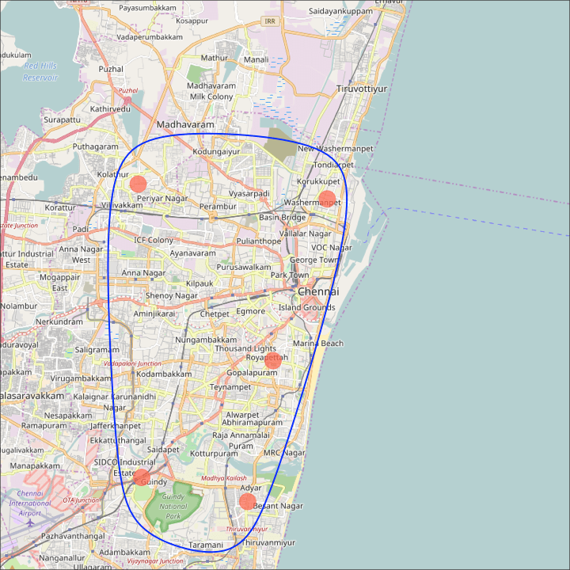
Google Road Map
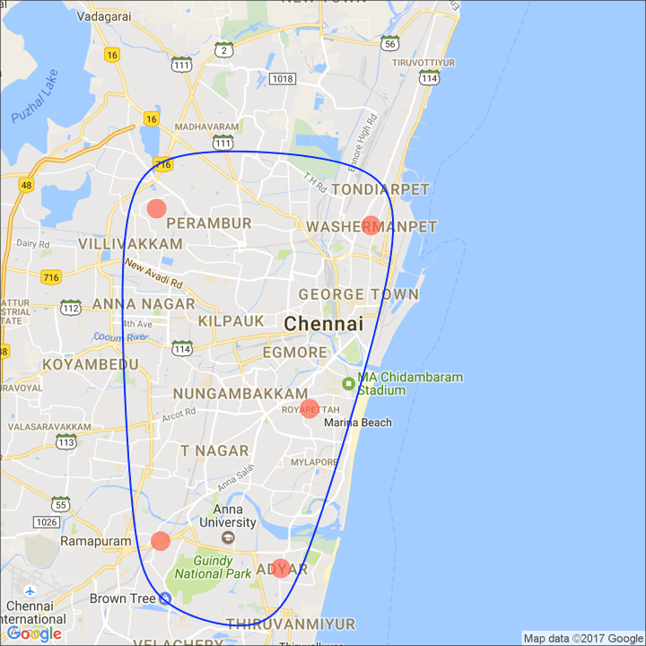
Google Hybrid Map
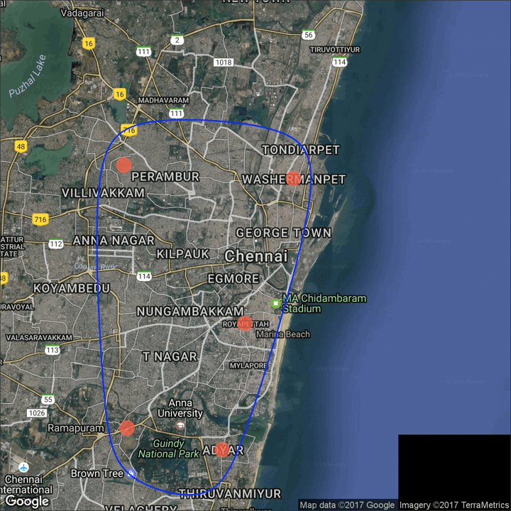
Have a suggestion or found a bug? Notify here.